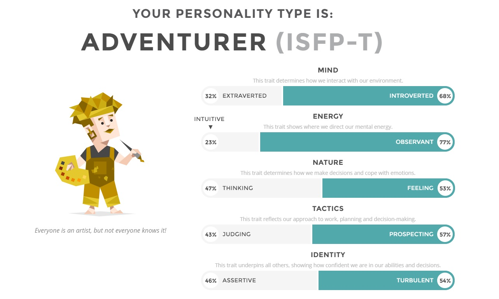
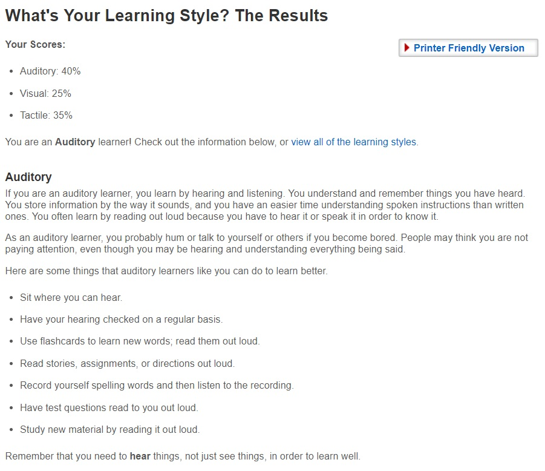
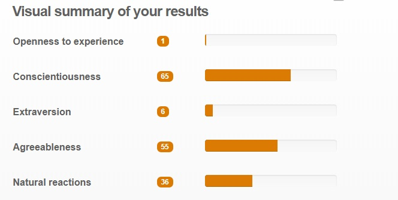
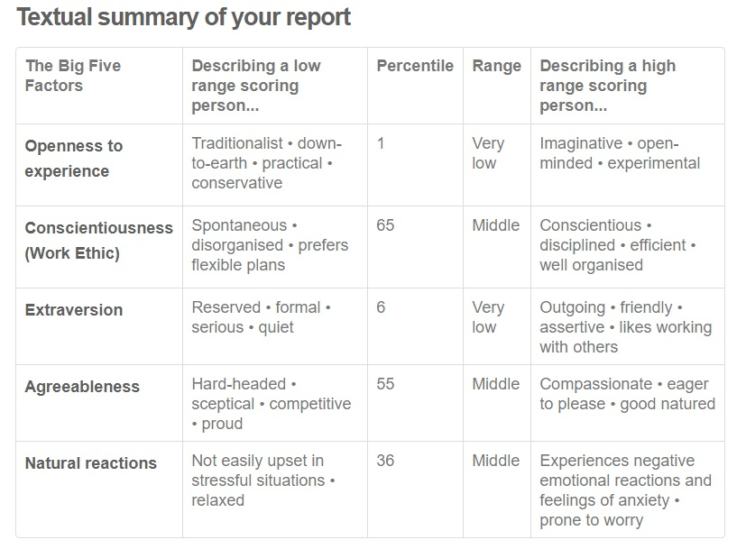

Personal Information
Name: Barry Vernon Greer Student Number: 3785172
Email Address: (Personal) greer2202@gmail.com
(Student) s3785172@student.rmit.edu
Background Information: I’m an Australian resident but my family come from New Zealand and our ancestry is from Ireland. I have completed year 12 VCE, including a Certificate 4 in Information Technology. I have a miniature Chihuahua named Princess and I’ve had 5 fractured bones which include both my wrists and the top of my foot.
Intrest in IT
At first my interest in IT was being apart of a game development team coming up with designs and improvements to games, but now I’m just interested in being apart of a software development team and I like all aspects of the process such as designing, development or evaluating or updating. My interest in IT started when I first started to find conversations online discussing their opinions on video games and how they could be improved, so I chose IT electives in high school and that broadened my view on the options for employment and a range of expertise you can have. They main reason I was influenced to do project base work was by a student teacher at my high school who was a consultant for government agencies developing systems and interfaces for them.
I chose to come to RMIT because all my IT classmates in high school agreed that RMIT was the best choice for learning more IT skills and is more respected by employers and has a good reputation.
I expect to learn how to program at more experienced levels as well as broaden my skills in different sections of IT, so I have a variety of experience and a collective understanding of the IT world.
Ideal Job
Click here for the url to the Job advertisment
This job Is for a permeant position as a software developer, which would include cooperating with
a team or group to implement software solutions this includes the early process of developing a solution
such as analysis of what is required as well as the creating of designs.
This position in this company is interesting to me as they seem to focus more on their employees to be
involved in a lot of sections of their projects as well as their attitude on their employees to grow
through training and learning opportunities.
Skills/qualifications/experience the employers require:
- A Bachelor degree In IT and similar studies
- Experience with web development tools and frameworks specifically MVC
- Familiarity with popular programming community sites and apps such as GitHub and jQuery.
- Some other Programming skills are also encouraged like other languages like HTML and CSS.
Skills/Qualifications/Experience I currently have:
- Currently studying Bachelor Of Technology (Computing studies)
- Certificate 4 in Information Technology
- Beginner to intermediate knowledge of HTML
- Intermediate knowledge of Java language
- Office Applications (Excel, Access, Word)
Personal Profile
   What do the results of these tests mean for you?
I can be very closed off at times and can be very quiet, but I like to take things serious when in working situations and make sure I’m understanding everyone’s points of views in order to not let others down. I do like to consider all options and information to make more concise decisions rather then just 'trust my gut’. When it comes to stressful situations, I try to stay relaxed and focused, but I can become anxious if they don’t get easier fast, such as long projects that aren’t handled in a timely fashion.
How do you think these results may influence your behaviour in a team?
When in a team scenario I try to make sure everyone has a voice as I try to make sure everyone is involved and if the team struggles to cooperate, I normally try to play a leader role, otherwise I normally am quieter and keep to myself and make sure I’m doing my part.
How should you take this into account when forming a team?
I should make sure when I’m making a team that I get everyone to participate in discussions as I learn better by hearing as I’m an auditory learner, also as I make decisions by understanding the whole situation.
Project Idea
My project idea would be an application most likely for a phone that would track user customised or featured events and create a form of a checklist on what the user would need for the event including specific items such as a computer or passport, what type of clothes as well as quantity of them. The app would also organise the time of the trip and what estimated time to leave to make sure the user is on time or early. The user will be reminded when to leave what to make sure they have by notifications from the app.
This project is motivated by my own experience as well as observations of others forgetfulness, so I thought it would be useful to have your own checklist that you could go through before leaving for the day to go to school, work or a night out with friends. Sometimes one little reminder to bring a piece of work or a device charger from a friend or family member can be what changes a stressful day at work or school to a productive one.
The event planner application would ask you to select some common or future events from a list that can be edited, or custom events can be inputted. The selection process would include clarifying specific details about the event such as the date of the event what time it would be at and how long it would occur. Other required details would be what attire or dress code that is needed such as causal, dress up or formal. Items that would be taken for the event or trip to the event would also be recorded from the user, they would also be able to highlight items as important so that the application makes sure they are checked off before the time of departure. Once the events are set notifications will be sent before the event at times set by the user or default times in the app, once the last reminder is sent it will ask the user to check off the list of items for the event or cancel the event. Most of the events set in the app would be fixed weekly such as timetabled events for school, work or parents to do list for their children. The application would be designed mostly for smart phones and would have three main sections, first being the ‘Upcoming event’ section which would include all the upcoming events for the next week or month, this would give the user quick access to all the important events that are soon. The next section is the ‘Calendar’ section that would have all the events that are planned on a monthly calendar and the user would be able to click on any of the events and check the details of the event. The third section would just be a complete list of all the events set, recent events and past events. The user would be able to add events through the calendar or by an icon that will be on the main layout of the application. The user can also setup a bonus function that would keep track of where their popular items are in their room or house, this feature would be paired with lights or a beeper on their draws or wardrobe that would be turned on when the user enters the checklist phase for their event.
The software is the main piece of the project and would need to be coded by a programming language that is compatible with mobile application development this does include some of the more popularly used ones such as java, C++ and python. This software would have to be built on a mobile app building platform such as Appery.io or BuildFire. For the lights and beepers there would have to be raspberry pi use to make them pair with the application.
The skills required for the project would include programming knowledge with a compatible programming language and knowledge of mobile application development especially how to use mobile app building platforms. There is going to be a need for knowledge of raspberry pi and how to use it in adjacent to the mobile application. It should be easy to find the programming skills for the project as the code shouldn’t be too complicated and shouldn’t require expert use of a programming language. The skills for the building platform for the mobile application might be harder to find as it is a more unique skill but should be feasible to acquire or learn the skills. The hardware section of the project would be difficult as raspberry pi isn’t free and would require knowledge of information systems.
If this project would work as planned it would allow users to be more relaxed when it comes to quick exits from home and would bring certainty to their minds that they are fully prepared for their day or trip. It would provide a organised system to forgetful users including aspiring school kids, rushed business people or stressed University students.